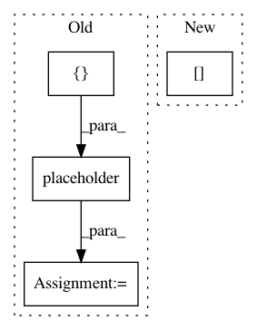

13ed139f539684bf39919963241bf37ab2967d77,examples/pretrained_cnn/tutorial_models_mobilenetv1.py,,,#,18
Before Change
tf.logging.set_verbosity(tf.logging.DEBUG)
tl.logging.set_verbosity(tl.logging.DEBUG)
x = tf.placeholder(tf.float32, [None, 224, 224, 3])
// get the whole model
mobilenetv1 = tl.models.MobileNetV1(x)
// restore pre-trained parameters
sess = tf.InteractiveSession()
mobilenetv1.restore_params(sess)
probs = tf.nn.softmax(mobilenetv1.outputs)
mobilenetv1.print_params(False)
mobilenetv1.print_layers()
img1 = tl.vis.read_image("data/tiger.jpeg")
img1 = tl.prepro.imresize(img1, (224, 224)) / 255
_ = sess.run(probs, feed_dict={x: [img1]})[0] // 1st time takes time to compile
start_time = time.time()
prob = sess.run(probs, feed_dict={x: [img1]})[0]
print(" End time : %.5ss" % (time.time() - start_time))
preds = (np.argsort(prob)[::-1])[0:5]
for p in preds:
print(class_names[p], prob[p])
After Change
img1 = tl.vis.read_image("data/tiger.jpeg")
img1 = tl.prepro.imresize(img1, (224, 224)) / 255
img1 = img1.astype(np.float32)[np.newaxis, ...]
start_time = time.time()
output = mobilenetv1(img1, is_train=False)
prob = tf.nn.softmax(output)[0].numpy()
In pattern: SUPERPATTERN
Frequency: 3
Non-data size: 4
Instances
Project Name: tensorlayer/tensorlayer
Commit Name: 13ed139f539684bf39919963241bf37ab2967d77
Time: 2019-04-23
Author: rundi_wu@pku.edu.cn
File Name: examples/pretrained_cnn/tutorial_models_mobilenetv1.py
Class Name:
Method Name:
Project Name: NifTK/NiftyNet
Commit Name: 60ac44f9e688577d47ae506be06058a8916af100
Time: 2018-05-08
Author: wenqi.li@ucl.ac.uk
File Name: niftynet/engine/image_window.py
Class Name: ImageWindow
Method Name: _update_placeholders_dict
Project Name: tensorlayer/tensorlayer
Commit Name: 301f593e6d80712315ec965996cdccb9a20b54c0
Time: 2019-04-24
Author: rundi_wu@pku.edu.cn
File Name: examples/pretrained_cnn/tutorial_models_squeezenetv1.py
Class Name:
Method Name: